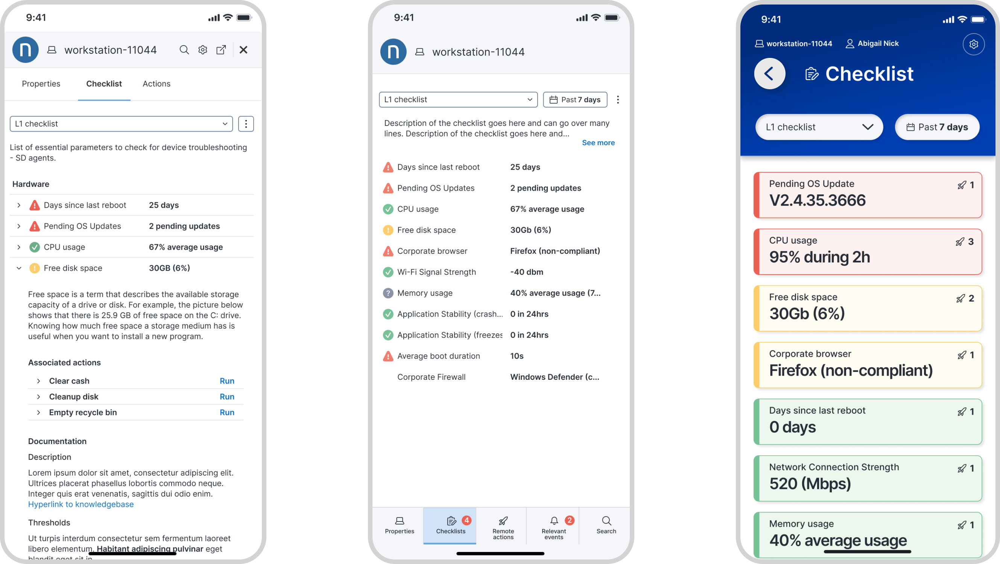

- iOS + AndroidDual platform
- 2023Shipped
- 11.5MDevices on Nexthink platform
- Sole DesignerMy role
Challenge
Mobile agents needed the same Amplify diagnostics available at their desks — but the multi-panel desktop extension couldn't translate directly to a touch-first context. The challenge was to re-think the information hierarchy entirely for mobile without losing the depth that made Amplify powerful.
Process
I mapped how agents actually used Amplify on desktop and identified the 20% of actions that covered 80% of mobile use cases. From there, I designed gesture-driven flows optimised for one-handed use during live calls, testing across iOS and Android with L1 agents in real support environments.
Outcome
Shipped on iOS and Android as part of the Nexthink Amplify suite — extending AI-powered diagnostics to agents wherever they work, whether on the floor, in the field, or between desks. The shared design system ensured feature parity with the browser extension.
Defining development phases
The first step was understanding what phases of the Amplify experience needed to exist on mobile — and what could safely be cut. This phased breakdown became the shared reference point between design, product, and engineering before a single screen was drawn.

Sketches & Journeys
I started with low-fidelity user flow sketches to validate the core navigation model, then moved into detailed wireframes for each primary screen. Each stage was tested with L1 agents before progressing to higher fidelity — ensuring the flows matched real support behaviour rather than ideal scenarios.


The shipped product
The final app distilled Amplify's diagnostic power into a mobile-native experience — fast search, scannable device health summaries, and guided remediation templates — all reachable with one hand during a live support call. The design system was built to stay in sync with the browser extension across future releases.